The open ground is now the darkest thing on screen, a cool slate, so the gold slime and the cyan crystals are the only colour. Before, the ground was an olive-brown that read as sand beside the slime, and sand soil was brighter than a thin slime film. Only the bare ground's colours changed. The soils still read apart, and the engine's scent and species tints still lie over them.
Before is main; after is this change. Same round, same frame.
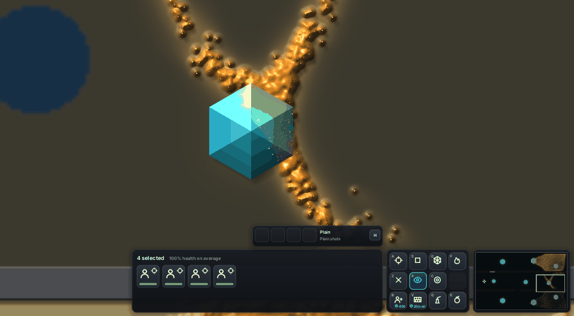
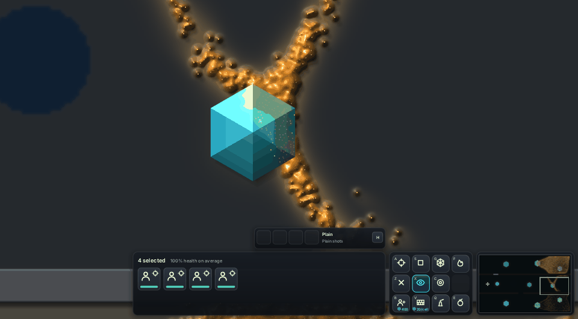
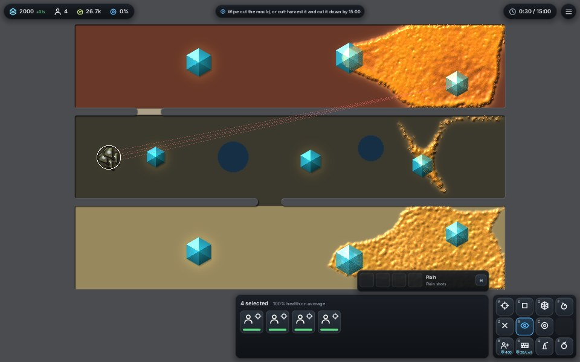
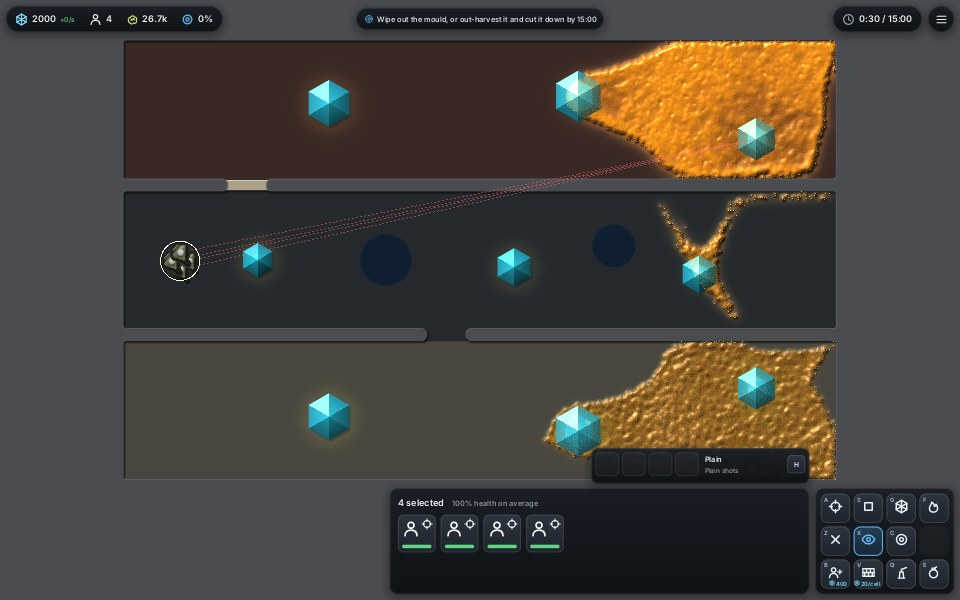
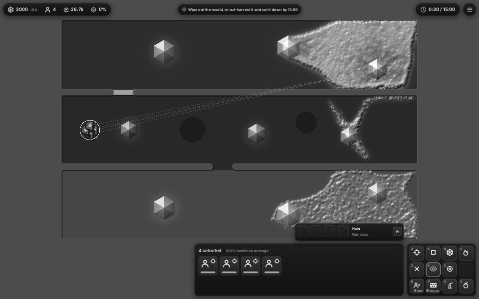
| Ground | Luma before | after |
|---|---|---|
| Plain (flat) | 53 | 38 |
| Sand | 133 | 67 |
| Clay | 67 | 43 |
| Barren | 76 | 50 |
| Wet | 41 | 27 |
| Rock (unchanged) | 70-117 | 70-117 |
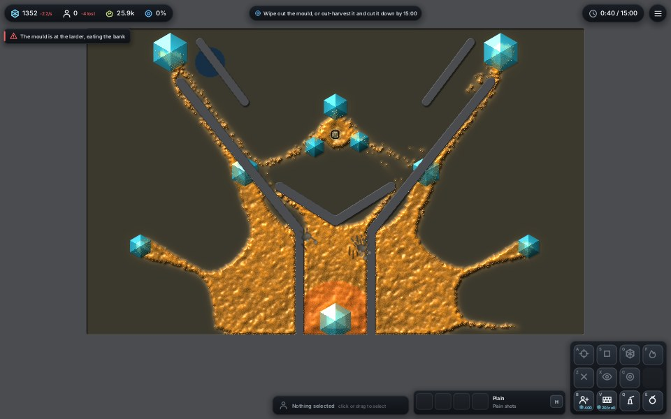
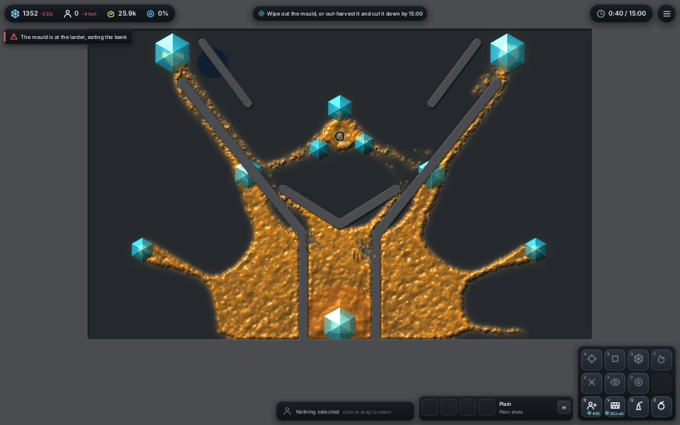
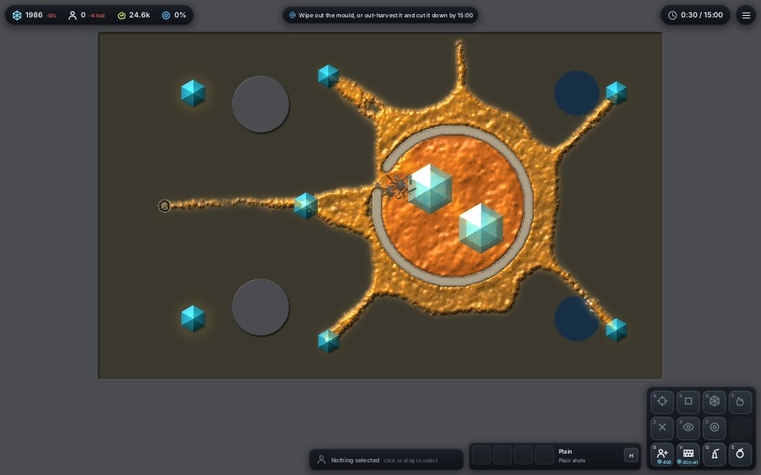
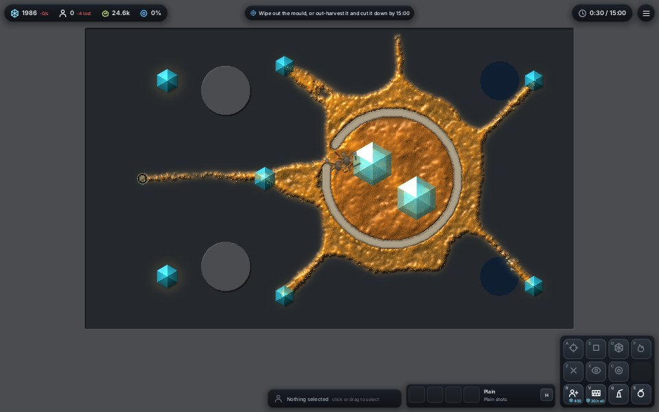
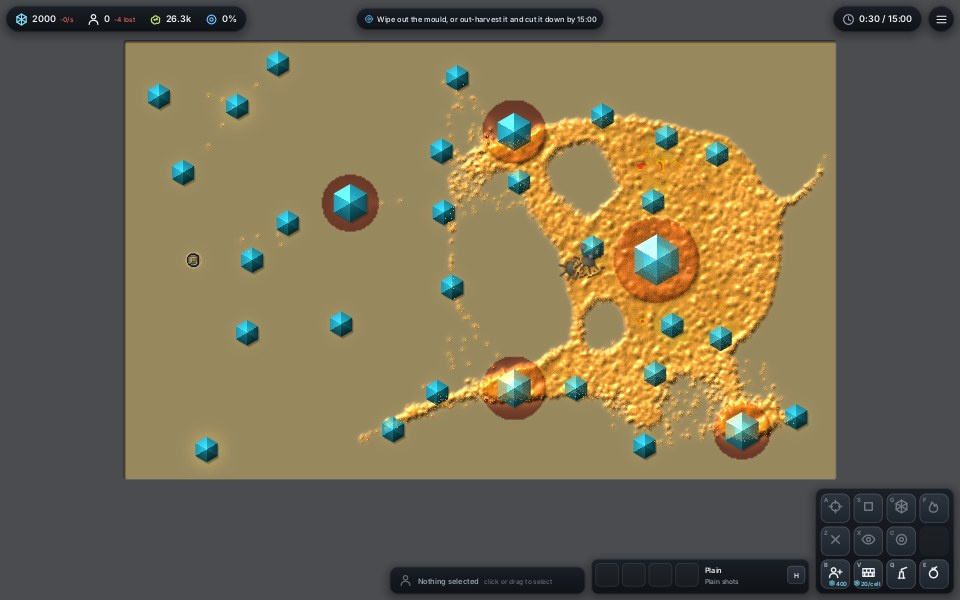
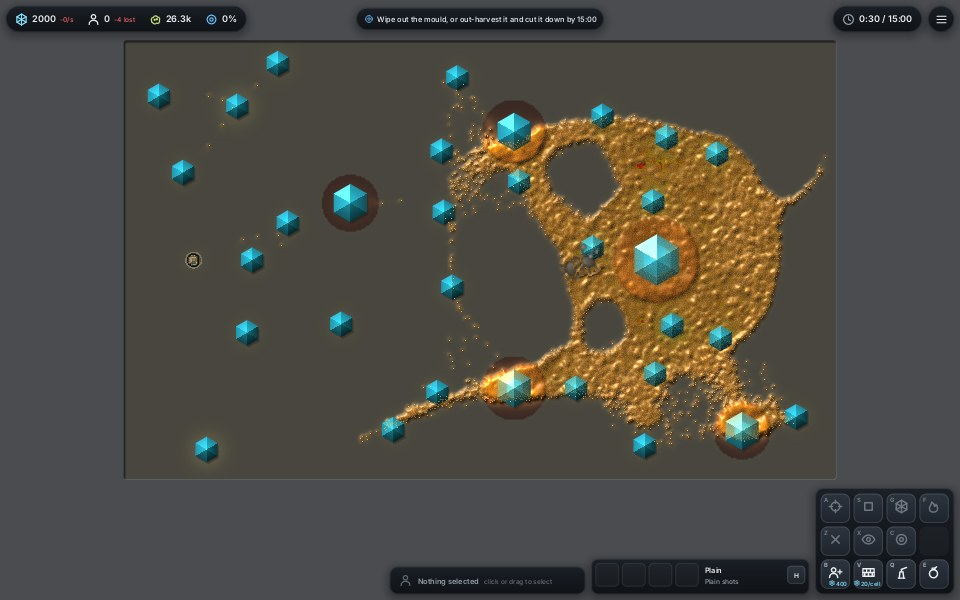
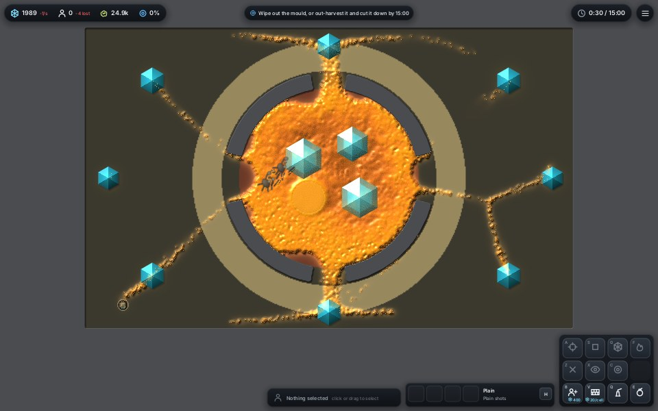
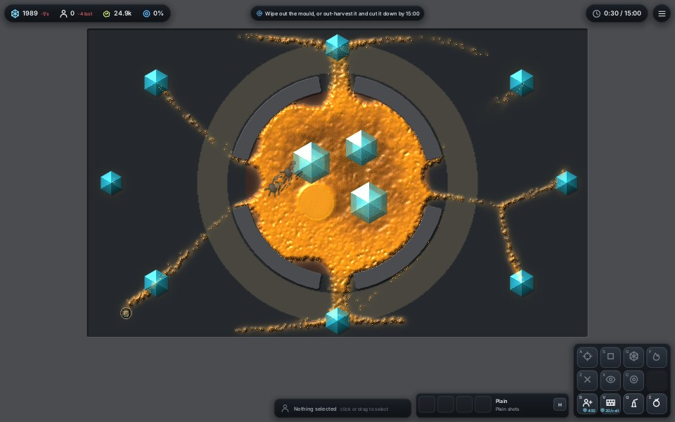
Cost: none (constants only).